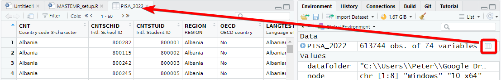
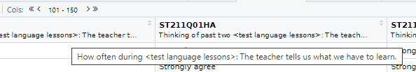
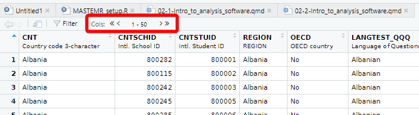
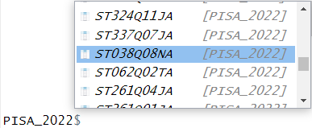

This course focuses on using the tidyverse; a free collection of programming packages that will allow you to write code that imports data, tidys it, transforms it into useful datasets, visualises findings, creates statistical models and communicates findings to others data using a standardised set of commands.
Data science workflow - RStudio
For many people the tidyverse is the main reason that they use R. The tidyverse is used widely in government, academia, NGOs and industry, notable examples include the Financial Times and the BBC. Code in the tidyverse can be (relatively) easily understood by others and you, when you come back to a project after several months.
Note
Try this out
The code above transforms data and converts it into a graph. It doesn’t have any comments, but you should hopefully be able to understand what a lot of the code does by just reading it. Can you guess what each line does? Try running the code by selecting parts of it and pressing control | command ⌘ and Enter
1 Loading data
We can’t do much with R without loading data from elsewhere. Data will come in many formats and R should be able to deal with all of them. Some of the datasets you access will be a few rows and columns; others, like the ones we are going to use on this course, might run into hundreds of thousands or even millions of rows and hundreds or thousands of columns. Depending on the format you are using, you might need to use specific packages. A few of the data file types you might meet are described below:
File type
Description
Comma separated values [.csv]
As it says in the name, .csv files store data by separating data items with commas. They are a common way of transferring data and can be easily created and read by Excel, Google spreadsheets and text editors (in addition to R). CSVs aren’t compressed so will generally be larger than other file types. They don’t store information on the types of data stored in the file so you might find yourself having to specify that a date column is a date, rather than a string of text. You can read and write csv files without the need to load any packages, but if you do use readr you might find things go much faster.
Excel [.xls | .xlsx | .xlsxm]
Excel files store data in a compressed custom format. This means files will generally be smaller than CSVs and will also contain information on the types of data stored in different columns. R can read and write these files using the openxlsx package, but you can also use the tidyverse’s readxl for reading, and writexl for writing for excel formats.
R Data [.rds]
R has it’s own data format, .rds. Saving to this format means that you will make perfect copies of your R data, including data types and factors. When you load .rds files they will look exactly the same as when you saved them. Data can be highly compressed and it’s one of the fastest formats for getting data into R. You can read and write .rds files without the need to load any packages, but using the functions in readr might speed things up a bit. You won’t be able to look at .rds files in other programs such as Excel
Arrow [.parquet]
Apache Arrow .parquet is a relatively new format that allows for the transfer of files between different systems. Files are small and incredibly fast to load, whilst looking exactly the same as when you save them. The PISA dataset used here, that takes ~20 seconds to load in .rds format, will load in less than 2 seconds in .parquet format. Because of the way that data is stored you won’t be able to open these files in programs such as Excel. You will need the arrow package to read and write .parquet files.
SPSS [.sav]
SPSS is a common analysis tool in the world of social science. The native format for SPSS data is .sav. These files are compressed and include information on column labels and column datatypes. You will need either the haven or foreign packages to read data into R. Once you have loaded the .sav you will probably want to convert the data into a format that is more suitable for R, normally this will involve converting columns into factors. We cover factors in more detail below.
Stata [.dta]
haven or foreign packages to read data into R
SAS [.sas]
haven or foreign packages to read data into R
Structured Query Language [.sql]
a common format for data stored in large databases. Normally SQL code would be used to query these, you can use the tidyverse to help construct SQL this through the package dbplyr which will convert your tidyverse pipe code into SQL. R can be set up to communicate directly with databases using the DBI package.
JavaScript Object Notation [.json]
.json is a popular format for sharing data on the web. You can use jsonlite and rjson to access this type of data
For this course we will be looking at .csv, excel, .rds and parquet files.
2 Dataframes
Loading datasets into R will normally store them as dataframes (also known as tibbles when using the tidyverse). Dataframes are the equivalent of tables in a spreadsheet, with rows, columns and datatypes.
The table above has 4 columns, each column has a datatype, CNT is a character vector, PV1MATH is a double (numeric) vector, ESCS is a double (numeric) vector and IC172Q01JA is a factor. For more about datatypes, see ?@sec-datatypes
Tip
Core to the tidyverse is the idea of tidy data, a rule of thumb for creating data sets that can be easily manipulated, modeled and presented. Tidy data are data sets where each variable is a column and each observation a row.
This data isn’t tidy data as each row has contains multiple exam results (observations):
ID
Exam 1
Grade 1
Exam 2
Grade 2
R2341
English
4
Maths
5
R8842
English
5
This dataframe is tidy data as each student has one entry for each exam:
ID
Exam
Grade
R2341
English
4
R2341
Maths
5
R8842
English
5
First we need to get some data into R so we can start analysing them. We can load large datatables into R by either providing the online web address, or by loading it from a local file directory on your hard drive. Both methods are covered below:
3 Loading data from the web
To download files from the web you’ll need to find the exact location of the file you are using. For example below we will need another package, openxlsx, which you need to install before you load it (see: ?@sec-packages, or use line 1 below). The code shown will download the files from an online Google drive directly into objects in R using read.xlsx(<file_web_address>, <sheet_name>):
Tip
To convert data on your google drive into a link that works in R, you can use the following website: https://sites.google.com/site/gdocs2direct/. Note that not all read/load commands in R will work with web addresses and some will require you have to copies of the datasets on your disk drive. Additionally, downloading large datasets from the web directly into R can be very slow, loading the dataset from your harddrive will nearly always be much faster.
Downloading files directly from web addresses can be slow and you might want to prefer to use files saved to your computer’s hard drive. You can do this by following the steps below:
Download the PISA_2022_student_subset.parquet file from here and save it to your computer where your R code file is.
Copy the location of the file (see next step for help)
To find the location of a file in Windows do the following:
Navigate to the location of the file in Windows Explorer:
Click on the address bar
Copy the location
To find the location of a file in Mac OSX do the following:
Open Finder
Navigate to the folder where you saved the file
Right click on the name of the file, then press the option⌥ (or Alt) button and select Copy <name of file> as Pathname
To load this particular data into R we need to use the read_parquet command from the arrow package, specifying the location and name of the file we are loading. See the following code:
Using the setwd(<location>) you can specify where R will look by default for any datasets. In the example below, the dfe_data.xlsx will have been downloaded and stored in C:/Users/Peter/code. By running setwd("C:/Users/Peter/code") R will always look in that location when trying to load files, meaning that read_parquet(r"[C:/Users/Peter/code/PISA_student_2022.parquet]") will be treated the same as read_parquet(r"[PISA_student_2022.parquet]")
To work out what your current working directory is, you can use getwd().
5.1 Proper addresses
You might have found that you get an error if you don’t convert your backslashes \ into forwardslashes /. It’s common mistake and very annoying. In most programming languages a backslash signifies the start of a special command, for example \n signifies a newline.
With R there are three ways to get around the problem of backslashes in file locations, for the location:"C:\myfolder\" we could:
replace them with forwardslashes (as shown above):"C:/myfolder/"
replace them with double backslashes (the special character specified by two backslashes is one backslash!):"C:\\myfolder\\"
use the inbuilt R command to deal with filenames: r"[C:\myfolder\]"
6 .parquet files
For the majority of this workbook you will be using a cutdown version of the PISA_2022 student table. This dataset is huge and we have loaded it into R, selected fields we think are useful, converted column types to work with R and saved in the .parquet format. .parquet files are quick to load and small in size. To load a .parquet file you can use the read_parquet(<location>) command from the arrow package.
If you want to save out any of your findings, you can use write_parquet(<object>, <location>), where object is the table you are working on and location is where you want to save it.
A very common way of distributing data is through .csv files. These files can be easily compressed and opened in common office spreadsheet tools such as Excel. To load a .csv we can use read_csv("<file_location>")
library(tidyverse)# loading from a websitedata <-read_csv("https://barrolee.github.io/BarroLeeDataSet/BLData/BL_v3_MF.csv")# loading from your hard drivedata <-read_csv("<your_folder>/BL_v3_MF.csv")
You might want to save your own work as a .csv for use later or for manipulation in another tool e.g. Excel. To do this we can use write_csv(<your_data>, "<your_folder><name>.csv"). NOTE: don’t forget to add .csv to the end of your “.csv”, otherwise you might struggle to open the file in another program.
library(tidyverse)# loading from a websitewrite_csv(data, "summary_stats.csv")
8 Exploring data
Now that we have loaded the PISA_2022 dataset we can start to explore it.
You can check that the tables have loaded correctly by typing the object name and ‘running’ the line (control|command ⌘ and Enter)
PISA_2022
# A tibble: 613,744 × 68
CNT CNTSCHID CNTSTUID REGION OECD LANGTEST_QQQ ST003D02T ST003D03T
* <fct> <dbl> <dbl> <fct> <fct> <fct> <fct> <fct>
1 Albania 800282 800001 Albania No Albanian May 2006
2 Albania 800115 800002 Albania No Albanian February 2006
3 Albania 800242 800003 Albania No Albanian August 2006
4 Albania 800245 800005 Albania No Albanian July 2006
5 Albania 800285 800006 Albania No Albanian January 2006
6 Albania 800172 800007 Albania No Albanian May 2006
7 Albania 800082 800008 Albania No Albanian May 2006
8 Albania 800274 800009 Albania No Albanian December 2006
9 Albania 800057 800010 Albania No Albanian August 2006
10 Albania 800132 800012 Albania No Albanian September 2006
# ℹ 613,734 more rows
# ℹ 60 more variables: ST004D01T <fct>, ST250Q01JA <fct>, ST250Q02JA <fct>,
# ST250Q03JA <fct>, ST250Q05JA <fct>, ST251Q01JA <fct>, ST251Q06JA <fct>,
# ST253Q01JA <fct>, ST254Q01JA <fct>, ST254Q03JA <fct>, ST255Q01JA <fct>,
# ST256Q02JA <fct>, ST005Q01JA <fct>, ST007Q01JA <fct>, ST125Q01NA <fct>,
# ST261Q01JA <fct>, ST261Q04JA <fct>, ST038Q08NA <fct>, ST337Q07JA <fct>,
# ST324Q11JA <fct>, ST355Q03JA <fct>, FL150Q02TA <fct>, IC172Q01JA <fct>, …
We can see from this that the tibble (another word for dataframe, basically a spreadsheet table) is 613744 rows, with 68 columns 1. This is data for all the students from around the world that took part in PISA 2022. The actual PISA dataset has many more columns than this, but for the examples here we have selected 68 of the more interesting data variables. The column names might seem rather confusing and you might want to refer to the [PISA 2022 code book](https://webfs.oecd.org/pisa2022/CY08MSP_CODEBOOK_5thDecember23.xlsx to find out what everything means.
The data shown in the console window is only the top few rows and first few columns. To see the whole table click on the Environment panel and the table icon to explore the table:

Alternatively, you can also hold down command ⌘|control and click on the table name in your R Script to view the table. You can also type View(<table_name>). Note: this has a capital “V”
In the table view mode you can read the label attached to each column, this will give you more detail about what the column stores. If you hover over columns it will display the label:

Alternatively, to read the full label of a column, the following code can be used:
# You might also want to read the label of a fieldattr(PISA_2022$ST013Q01TA, "label")
NULL
Each view only shows you 50 columns, to see more use the navigation panel:

Note
To learn more about loading data from in other formats, e.g. SPSS and STATA, look at the tidyverse documentation for haven.
The PISA_2022 dataframe is made up of multiple columns, with each column acting like a vector, which means each column stores values of only one datatype. If we look at the first four columns of the schools table, you can see the CNTSTUID, ESCS and PV1MATH columns are <dbl> (numeric) and the other three columns are of <fctr> (factor), a special datatype in R that helps store categorical and ordinal variables, see ?@sec-factors for more information on how factors work.
Vectors are data structures that bring together one or more data elements of the same datatype. E.g. we might have a numeric vector recording the grades of a class, or a character vector storing the gender of a set of students. To define a vector we use c(item, item, ...), where c stands for combine. Vectors are very important to R, even declaring a single object, x <- 6, is creating a vector of size one. To find out more about vectors see: ?@sec-vectors
We can find out some general information about the table we have loaded. nrow and ncol tell you about the dimensions of the table
nrow(PISA_2022) # how many rows are in the results table
[1] 613744
ncol(PISA_2022) # how many columns are in the results table
[1] 68
If we want to know the names of the columns we can use the names() command that returns a vector. This can be a little confusing as it’ll return the names used in the dataframe, which can be hard to interpret, e.g. ST004D01T is PISA’s way of encoding gender. You might find the labels in the view of the table available through view(PISA_2022) and the Environment panel easier to navigate:
As mentioned, the columns in the tables are very much like a collection of vectors, to access these columns we can put a $ [dollar sign] after the name of a table. This allows us to see all the columns that table has, using the up and down arrows to select, press the Tab key to complete:

PISA_2022$ST004D01T
[1] Female Male Male Female Female Male Male Female Female Female
[11] Male Male Male Male Female Female Male Female Female Female
[21] Male Male Male Female Female Female Female Female Male Female
[31] Male Male Male Female Female Male Female Female Female Female
[ reached getOption("max.print") -- omitted 613704 entries ]
attr(,"label")
[1] Student (Standardized) Gender
Levels: Female Male Valid Skip Not Applicable Invalid No Response
We can apply functions to the returned column/vector, for example: sum, mean, median, max, min, sd, round, unique, summary, length. To find all the different/unique values contained in a column we can write:
unique(PISA_2022$CNT) # the unique values in this column
[1] Albania Baku (Azerbaijan) Argentina
[4] Australia Austria Belgium
[7] Brazil Brunei Darussalam Bulgaria
[10] Cambodia Canada Chile
[13] Chinese Taipei Colombia Costa Rica
[16] Croatia Czech Republic Denmark
[19] Dominican Republic El Salvador Estonia
[22] Finland France Georgia
[25] Palestinian Authority Germany Greece
[28] Guatemala Hong Kong (China) Hungary
[31] Iceland Indonesia Ireland
[34] Israel Italy Kosovo
[37] Jamaica Japan Kazakhstan
[40] Jordan
[ reached getOption("max.print") -- omitted 40 entries ]
81 Levels: Albania United Arab Emirates Argentina Australia Austria ... Viet Nam
We can also combine commands, with length(<vector>) telling you how many items are in the unique(PISA_2022$CNT) command
# tells you the number of countries in PISA 2022length(unique(PISA_2022$CNT))
[1] 80
You might meet errors when you try and run some of the commands because a field has missing data, recorded as NA. In the case below it doesn’t know what to do with the NA values in PV1MATH, so it gives up and returns NA:
max(PISA_2022$ESCS) # max cultural capital value for all students
[1] NA
You can see the NAs by just loking at this column:
To get around this you can tell R to remove/ignore the NA values when performing maths calculations:
# max cultural capital score for all studentsmax(PISA_2022$ESCS, na.rm =TRUE)
[1] 7.38
Tip
R’s inbuilt mode function doesn’t calculate the mathematical mode, instead it tells you what type of data you are dealing with. You can work out the mode of data by using the modeest package:
There is more discussion on how to use modes in R here
Calculations might also be upset when you try to perform maths on a column that is stored as another datatype. For example if you wanted to work out the mean common number of minutes spent learning the language that the PISA test was sat in, e.g. number of hours of weekly English lessons in England:
mean(PISA_2022$LMINS)
[1] NA
Looking at the structure of this column, we can see it is stored as a factor, not as a numeric
str(PISA_2022$LMINS)
NULL
So we need to change the type of the column to make it work with the mean command, changing it to as.numeric(<column>) for the calculation, for more details on datatypes, see ?@sec-datatypes.
# this isn't ideal for proper analysis as you will need to remove all the "No Response" datamean(as.numeric(PISA_2022$LMINS), na.rm =TRUE)
[1] NaN
Tip
To get a good overview of what a table contains, you can use the str(<table_name>) and summary(<table_name>) commands.
8.1 Questions
Using the PISA_2022 dataset:
use the Environment window to view the dataset, what is the name and the label of the 100th column?
answer
# the 100th column is ST102Q02TA# the label is: "How often during <test language lessons>: The teacher asks questions to check whether we have understood what was taught"# you could use View() instead of the environment window, note the capital VView(PISA_2022)# use could use the vector subset to fetch the 100th namenames(PISA_2022)[100]# The vector is "ST062Q02TA"# you could use the attr function to find the labelattr(PISA_2022$ST062Q02TA, "label")# "In the last two full weeks of school, how often: I [skipped] some classes"# or using the dollar sign to load this field will also give the labelPISA_2022$ST062Q02TA
Use the dollar sign $ to return the column ST004D01T. What is stored in this column?
answer
# Student (Standardized) GenderPISA_2022$ST004D01T# [1] Female Male Male Female Female Male Male Female Female Female Male # [12] Male Male Male Female Female Male Female Female Female Male Male # [23] Male Female Female Female Female Female Male Female Male Male Male # [34] Female Female Male Female Female Female Female Female Male Female Male # [ reached getOption("max.print") -- omitted 612744 entries ]# attr(,"label")# [1] Student (Standardized) Gender# Levels: Female Male Valid Skip Not Applicable Invalid No Response
How many students results are in the whole table?
answer
nrow(PISA_2022)# [1] 613744
What unique values does the dataset hold for Mother’s occupation OCOD1 and Father’s occupation OCOD2? Which is larger?
answer
unique(PISA_2022$OCOD1)unique(PISA_2022$OCOD2)# you can read the length from the above, or you could use the# length command to tell you the length of the vectorlength(unique(PISA_2022$OCOD1))# [1] 590length(unique(PISA_2022$OCOD2))# [1] 590
What are the maximum, mean, median and minumum science grades PV1SCIE achieved by any student
answer
# remember to set the na.rm = TRUEmax(PISA_2022$PV1SCIE, na.rm=TRUE)# [1] 895.375mean(PISA_2022$PV1SCIE, na.rm=TRUE)# [1] 450.4625median(PISA_2022$PV1SCIE, na.rm=TRUE)# [1] 444.464min(PISA_2022$PV1SCIE, na.rm=TRUE)# [1] 0
Explore the dataset and makes notes about the range of values of 2 other columns
Footnotes
Even in this cut down format the PISA data might take a few minutes to load. You can find the full dataset here, but be warned, it might crash you machine when trying to load it! Plug your laptop into a power supply, and having 16GB of RAM highly recommended! You might also need to wrangle some of the fields to make them work for your purposes, you might enjoy the challenge!↩︎